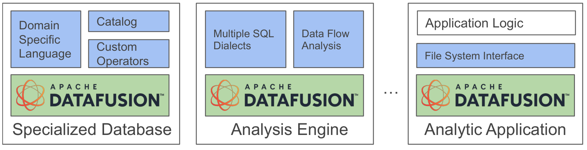
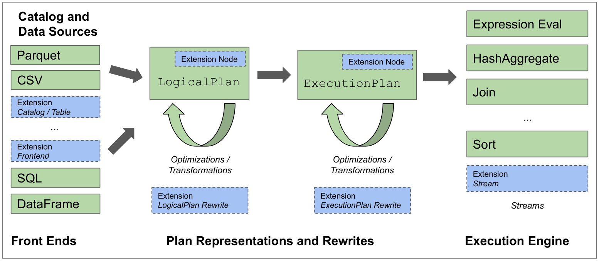
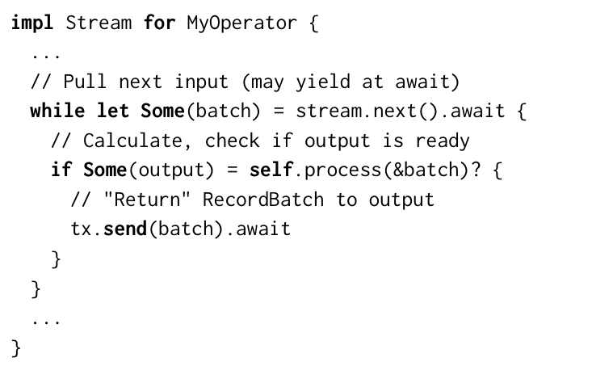
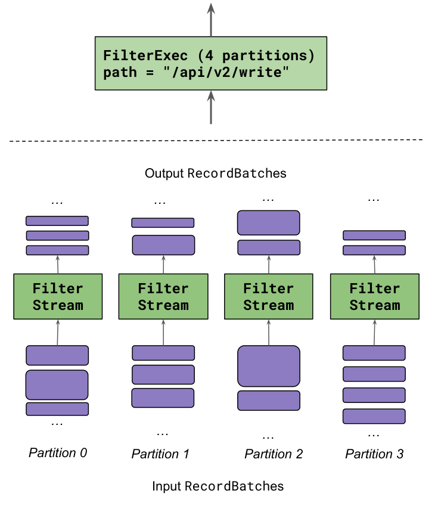
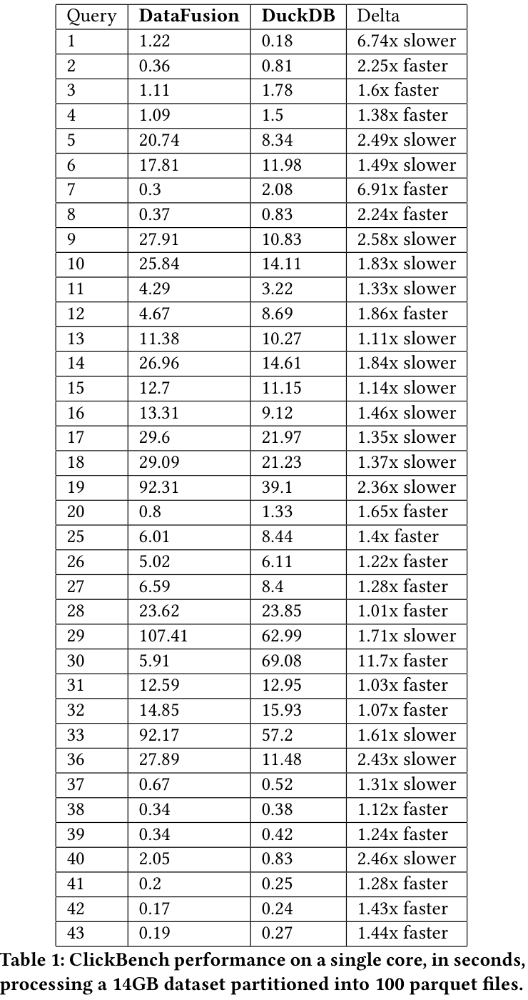
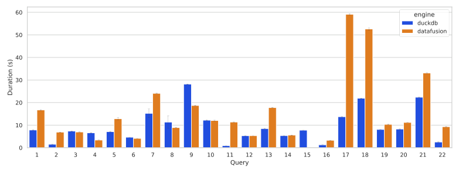
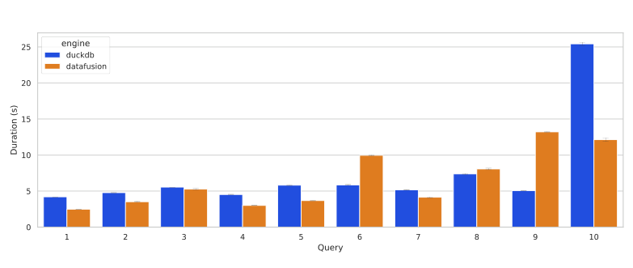
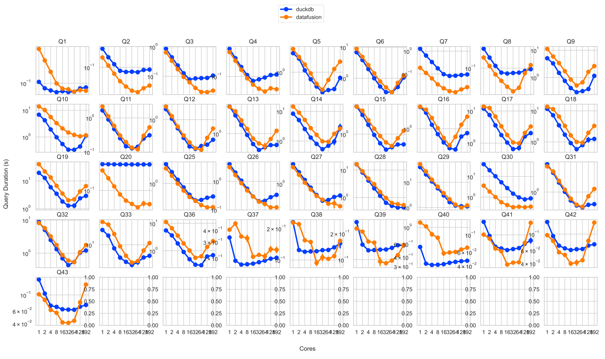

Apache Arrow DataFusion: Bộ máy truy vấn phân tích nhanh, nhúng được, dạng mô-đun
Tài liệu này đi đúng thứ tự từng mục của bài gốc. Ở mỗi mục có: (1) nội dung — diễn giải tiếng Việt đầy đủ các ý mà tác giả trình bày; (2) “Tác giả muốn nói gì” — ý đồ, thông điệp phía sau; (3) thuật ngữ giải thích dễ hiểu; (4) ví dụ / liên hệ khi cần. Nhãn tr. X cho biết trang PDF của bài gốc để bạn mở đối chiếu.
Về bản quyền: bài báo thuộc quyền xuất bản của ACM (không phải giấy phép mở), nên tài liệu này là bản diễn giải và chú giải để học, không phải bản dịch nguyên văn từng câu. Các hình được trích từ bài gốc kèm nguồn, phục vụ bình luận học thuật. Khi cần trích dẫn chính xác câu chữ trong báo cáo, hãy mở bài gốc theo số trang ghi bên cạnh.
Mục lục
- Tóm tắt, Hình 1, Từ khoá
- 1. Giới thiệu
- 2. Hệ sinh thái nền tảng (Arrow, Parquet, Rust)
- 3. Các trường hợp sử dụng
- 4. Cơ sở dữ liệu “tháo rời”
- 5. Tính năng của DataFusion (kiến trúc)
- 6. Các kỹ thuật tối ưu
- 7. Các điểm mở rộng
- 8. Đánh giá hiệu năng
- 9. Công trình liên quan
- 10. Kết luận, 11. Lời cảm ơn
- Tài liệu tham khảo (đã phân nhóm)
- Phụ lục: Bảng thuật ngữ
tr. 1Tóm tắt (Abstract)
Đoạn 1. DataFusion là một query engine (bộ máy thực thi truy vấn) viết bằng Rust, dùng Apache Arrow làm mô hình bộ nhớ, có ba tính chất: nhanh, nhúng được (chạy như một thư viện bên trong chương trình khác) và mở rộng được. Bài báo sẽ: mô tả các công nghệ nền mà DataFusion dựa vào; đặt nó vào xu hướng dài hạn của việc xây dựng hệ CSDL; liệt kê tính năng, tối ưu, kiến trúc và các API mở rộng — để cho thấy một engine OLAP hiện đại cần những gì và hệ thống xây trên nó cần những giao diện nào; cuối cùng so sánh thực nghiệm với DuckDB để chứng minh rằng chuẩn mở và thiết kế mở rộng được không cản trở hiệu năng ngang tầm hiện đại (state-of-the-art).
Đoạn 2. Tác giả thừa nhận từng kỹ thuật riêng lẻ trong DataFusion đều đã được mô tả nhiều lần. Điểm khác biệt là DataFusion vừa có hiệu năng cạnh tranh, vừa có kiến trúc mở, tuỳ biến được qua hơn 10 API mở rộng lớn. Nhờ linh hoạt nên nó đã được dùng trong nhiều CSDL thương mại và mã nguồn mở, pipeline học máy và các hệ thống xử lý dữ liệu khác. Tác giả dự đoán: tính dễ tiếp cận + linh hoạt + hiệu năng sẽ thúc đẩy làn sóng hạ tầng dữ liệu “may đo” được lắp ráp từ các thành phần mô-đun.
- Query engine
- Phần mềm nhận truy vấn (SQL hoặc API), lập kế hoạch, tối ưu và thực thi để trả kết quả. Là “trái tim” của một hệ CSDL, nhưng không nhất thiết kèm lưu trữ, giao dịch, quản lý người dùng.
- OLAP
- Online Analytical Processing – xử lý phân tích: truy vấn quét nhiều dòng, gom nhóm, tổng hợp (doanh thu theo tháng…), khác OLTP (giao dịch ngắn, đọc/ghi vài dòng).
- Embeddable (nhúng được)
- Chạy trong cùng tiến trình với ứng dụng như một thư viện, không cần dựng server riêng (giống SQLite, DuckDB).
- Extensible (mở rộng được)
- Cho phép người dùng cắm thêm hàm, nguồn dữ liệu, toán tử, luật tối ưu… mà không sửa mã lõi.
- State-of-the-art (SOTA)
- Mức tốt nhất hiện thời. Ở đây được đo bằng việc so với DuckDB – engine phân tích nhúng được xem là rất mạnh lúc đó.
tr. 1Hình 1

tr. 1CCS Concepts & Từ khoá
Bài được xếp vào nhóm: hệ thống CSDL (engine, OLAP, kiến trúc DBMS, mô hình quan hệ, xử lý truy vấn) và kỹ nghệ phần mềm (trừu tượng hoá – mô-đun, hiệu năng, khả năng sử dụng). Từ khoá: hệ CSDL, engine truy vấn mô-đun, column store, OLAP, vectorized execution, parallel execution, thiết kế API.
- Column store
- Lưu/xử lý dữ liệu theo cột: mọi giá trị của cột “giá” nằm liền nhau. Truy vấn chỉ cần 2/50 cột thì chỉ đọc 2 cột; dữ liệu cùng kiểu liền nhau nén tốt và hợp CPU.
- Vectorized execution
- Mỗi lần gọi toán tử xử lý cả một lô (vài nghìn giá trị) thay vì từng dòng → giảm chi phí gọi hàm, tận dụng cache và lệnh SIMD.
- Parallel execution
- Chia dữ liệu thành nhiều phần (partition) chạy đồng thời trên nhiều lõi CPU.
tr. 21. Giới thiệu (Introduction)
Bối cảnh. Từ trước tới nay, mảng engine phân tích hiệu năng cao do các hệ thống tích hợp chặt (tightly integrated) thống trị: Vertica, Spark, DuckDB. Cách làm này tối ưu “đường nối” giữa định dạng tệp, bố cục bộ nhớ và bộ xử lý để đạt hiệu năng đỉnh. Nhưng xây một hệ như vậy rất đắt, cần nguồn tài trợ thương mại/nghiên cứu lớn vì khối lượng kỹ nghệ phần mềm khổng lồ.
Vấn đề. Nhu cầu mới xuất hiện liên tục (co giãn tính toán trên cloud, cấp dữ liệu cho pipeline AI/ML) đòi hỏi hệ dữ liệu mới, và rõ ràng không cần viết lại engine mãi. Vì ngành và giới học thuật đã xây/nghiên cứu rất nhiều hệ phân tích, ta đã biết đâu là ranh giới tốt nhất giữa các phân hệ: định dạng tệp, catalog, front-end ngôn ngữ, engine thực thi.
Giải pháp. DataFusion được thiết kế theo đúng các ranh giới API đó, cho phép lắp ráp hệ thống đầu-cuối từ thành phần mở, tái sử dụng, chất lượng cao, dùng chuẩn Arrow (mục 2.1) và Parquet (mục 2.2). Việc nó vừa nhanh vừa mở rộng được chứng minh rằng engine OLAP hiện đại không cần kiến trúc liền khối. Bản thân sự tồn tại của nó còn chứng minh giấy phép dễ dãi (permissive license – Apache 2.0) và tổ chức mở (mô hình quản trị của Apache Software Foundation) đủ sức tạo ra và duy trì công nghệ ở tầm này.
Năm đóng góp của bài:
- Mô tả hệ sinh thái công nghệ nền của DataFusion — thứ tác giả tin sẽ chạy phần lớn hệ phân tích thành công trong thập kỷ tới.
- Mô tả các hệ thống đã xây trên DataFusion → cho thấy khả năng của một engine OLAP “hàng phổ thông” (commodity).
- Mô tả kiến trúc, tính năng, tối ưu → cho thấy engine hiện đại cần rộng đến mức nào và tốn công đến đâu.
- Định nghĩa các API mở rộng → vạch ra các ranh giới mô-đun chính trong một “stack” phân tích.
- Đánh giá hiệu năng → chứng minh SOTA đạt được bằng thành phần mô-đun và chuẩn mở.
Bố cục: mục 2 công nghệ nền; 3 ứng dụng thực tế; 4 xu hướng CSDL mô-đun; 5 kiến trúc & mô hình thực thi; 6 các tối ưu; 7 API mở rộng; 8 đánh giá; 9 công trình liên quan; 10 kết luận.
- Tightly integrated / monolithic
- Mọi tầng (lưu trữ, định dạng, thực thi, tối ưu) do một nhóm viết, gắn chặt với nhau – tối ưu tốt nhưng khó tách ra dùng lại.
- Catalog
- “Danh bạ” siêu dữ liệu: có bảng nào, cột gì, kiểu gì, nằm ở đâu, thống kê ra sao.
- Front-end ngôn ngữ
- Phần nhận ngôn ngữ truy vấn (SQL, DataFrame, PromQL…) và chuyển thành kế hoạch.
- Permissive license
- Giấy phép cho phép dùng cả trong sản phẩm thương mại đóng (Apache 2.0, MIT) – khác GPL.
tr. 22. Hệ sinh thái nền tảng (Foundational Ecosystem)
DataFusion chỉ khả thi nhờ ba công nghệ tầng dưới: Arrow (cấu trúc cột trong bộ nhớ + các compute kernel), Parquet (lưu trữ cột hiệu quả trên đĩa) và hệ sinh thái Rust (cho phép hiện thực vừa nhanh vừa dễ hiểu). Không có chúng, với nguồn lực khiêm tốn, khó mà xây được DataFusion. Thêm nữa, nhờ dùng các chuẩn này, hệ thống xây trên DataFusion dễ dàng chia sẻ trực tiếp tệp và luồng dữ liệu trong bộ nhớ với phần còn lại của hệ sinh thái, không phải chuyển đổi định dạng tốn thời gian và dễ lỗi.
- Compute kernel
- Hàm tính toán tối ưu sẵn chạy trên cả mảng (cộng hai cột, so sánh, lọc, sort…).
tr. 22.1 Apache Arrow
Về cốt lõi, Arrow chỉ chuẩn hoá các thực hành tốt nhất trong ngành để biểu diễn dữ liệu trong bộ nhớ theo bố cục cột thân thiện với cache. Arrow quy định các chi tiết như: cách biểu diễn NULL (validity bitmap), thứ tự byte (endianness), dữ liệu byte/chuỗi độ dài thay đổi, list, cấu trúc lồng nhau. Nhờ vậy hệ thống dùng Arrow được hưởng kỹ thuật đã biết và trao đổi dữ liệu dễ dàng giữa ứng dụng. Ví dụ của tác giả: NULL được đánh dấu bằng bit 0 hay 1 trong bitmap thì chẳng quan trọng mấy, nhưng mọi hệ thống phải thống nhất cùng một quy ước thì mới trao đổi được.
Ban đầu Arrow chỉ là định dạng trao đổi trong bộ nhớ; về sau bổ sung tính năng phục vụ tính toán như StringView và kernel hiệu năng cao. Người dùng Arrow khỏi phải tự viết lại những tính năng đã được hiểu rõ nhưng tốn công hiện thực.
- Validity bitmap
- Dãy bit đi kèm mỗi cột; bit i cho biết giá trị thứ i có NULL hay không. (Trong Arrow, bit 1 = hợp lệ, 0 = NULL.)
- Endianness
- Thứ tự byte của số nhiều byte: little-endian (byte thấp trước) hay big-endian (byte cao trước).
- StringView
- Kiểu chuỗi mới: mỗi phần tử 16 byte chứa độ dài + 4 byte đầu chuỗi (prefix) + vị trí phần còn lại; chuỗi ngắn nằm gọn “inline”. So sánh/lọc chuỗi nhanh hơn vì thường chỉ cần nhìn prefix.
- Zero-copy
- Hai thành phần dùng chung một vùng nhớ thay vì sao chép/chuyển đổi.
tr. 22.2 Apache Parquet
Parquet là định dạng tệp mã nguồn mở hướng cột, sinh ra cho hệ sinh thái Hadoop, lấy cảm hứng từ nghiên cứu lưu trữ cột (C-Store). Nó có: cơ chế nén và mã hoá hiệu quả; hỗ trợ kiểu có cấu trúc qua record shredding (kỹ thuật từ Dremel); lược đồ (schema) nhúng trong tệp; cấu trúc chỉ mục kiểu zone map; và Bloom filter để truy cập nhanh.
Khác Arrow (tối ưu cho truy cập ngẫu nhiên và xử lý trong RAM), Parquet tối ưu để lưu khối lượng lớn tiết kiệm chỗ. Không hoàn hảo, nhưng đã thành chuẩn de-facto cho lưu trữ và trao đổi trong giới phân tích nhờ: định dạng mở, nén tốt trên dữ liệu thật, thư viện khắp nơi, schema tự mô tả. Ngoài ra cấu trúc tệp cho phép engine áp dụng projection/filter pushdown và late materialization ngay trên tệp, đạt hiệu năng cạnh tranh với các định dạng chuyên dụng.
- Row group / Page
- Tệp Parquet chia theo chiều dọc thành các row group (khối nhiều dòng); trong mỗi row group, mỗi cột là một column chunk gồm nhiều page. Mỗi row group/page có thống kê min/max.
- Zone map
- Lưu min/max cho từng vùng dữ liệu; nếu điều kiện lọc không thể thoả trong khoảng [min,max] thì bỏ qua cả vùng.
- Bloom filter
- Cấu trúc xác suất trả lời “chắc chắn không có” hoặc “có thể có” một giá trị – dùng để bỏ qua row group khi lọc bằng điều kiện bằng (=).
- Record shredding
- Cách “xé” dữ liệu lồng nhau (JSON-like) thành các cột phẳng kèm mức lặp/định nghĩa để ghép lại được.
- Pushdown
- Đẩy thao tác (chọn cột, lọc, limit) xuống sát nguồn dữ liệu để đọc ít hơn.
- Late materialization
- Trì hoãn việc giải mã/dựng các cột cho tới khi biết dòng nào thực sự cần (xem 6.8).
tr. 2–32.3 Rust
Rust là ngôn ngữ lập trình hệ thống tương đối mới: quản lý bộ nhớ ở mức thấp nhưng an toàn, hiệu năng ngang C. Mô hình ownership (quyền sở hữu bộ nhớ) loại bỏ nhiều lỗi bộ nhớ và lỗi đa luồng tệ nhất thường gặp ở C/C++. Chương trình Rust dễ nhúng vào hệ khác vì không cần runtime (không có máy ảo, không có garbage collector) và tương thích C ABI. Triết lý zero-cost abstraction, thư viện hiệu năng phong phú, tài liệu và công cụ chẩn đoán thân thiện khiến Rust là lựa chọn hấp dẫn để làm ứng dụng hiệu năng cao với chi phí kỹ nghệ thấp hơn.
Khác nhiều hệ thống build C/C++ (riêng cấu hình đã vất vả), trình quản lý gói Cargo và hệ sinh thái crate khiến việc thêm DataFusion vào dự án chỉ là thêm một dòng vào tệp cấu hình.
datafusion = "50" trong Cargo.toml là dùng được. Với Python: pip install datafusion (đã thử trên máy bạn: bản 50.1.0).- Ownership
- Mỗi vùng nhớ có đúng một “chủ”; trình biên dịch kiểm tra lúc biên dịch để không có use-after-free, data race.
- C ABI
- Quy ước gọi hàm nhị phân chuẩn kiểu C → ngôn ngữ khác (Python, Java qua JNI, C++) gọi được thư viện Rust.
- Zero-cost abstraction
- Viết mã trừu tượng (generic, iterator) mà sau biên dịch chạy nhanh như viết tay.
- Crate / Cargo
- Crate = gói thư viện Rust; Cargo = công cụ build + quản lý phụ thuộc.
tr. 33. Các trường hợp sử dụng (Use Cases)
Nhiều sản phẩm thương mại và dự án mở dùng DataFusion vì kết hợp: mở rộng được, nhiều tính năng, truy vấn nhanh, tương thích hệ sinh thái. Dự án xây trên nó dành phần lớn thời gian cho tính năng tạo giá trị thay vì sao chép công nghệ engine. Dù còn giai đoạn đầu, DataFusion đã được dùng trong bốn nhóm:
- CSDL may đo cho lĩnh vực riêng: CSDL chuỗi thời gian (InfluxDB 3.0, Coralogix), nền tảng SQL dòng chảy/streaming (Synnada, Arroyo).
- Runtime thực thi cho front-end truy vấn chuyên biệt: Comet cho Apache Spark (mục 3.1), Seafowl cho PostgreSQL, ngôn ngữ trực quan hoá Vega, ngôn ngữ InfluxQL.
- Công cụ phân tích SQL: dask-sql, SDF – chỉ dùng bộ parse, planner và biểu diễn kế hoạch để phân tích câu SQL (không nhất thiết chạy).
- Table format: bản Rust của Delta Lake, Apache Iceberg, Lance – dùng biểu thức và kế hoạch truy vấn của DataFusion để lấy và giải mã dữ liệu từ xa, hiện thực delete tombstone dựa trên vị từ, đẩy vị từ vào chỉ mục phụ chuyên dụng, và gộp tệp (compaction) mà vẫn giữ thứ tự sắp xếp.
Tất cả thừa hưởng lợi ích “Arrow-native”. Ví dụ Lance cho người dùng viết hàm Python xử lý RecordBatch bằng thư viện pyarrow sẵn có, không cần chuyển đổi dữ liệu.
- Time series DB
- CSDL tối ưu cho dữ liệu gắn mốc thời gian (metrics, log, IoT).
- Table format
- Lớp quy ước trên nhiều tệp Parquet trong object store để chúng hành xử như một “bảng” (phiên bản, xoá, cập nhật, schema). Ví dụ Delta Lake, Iceberg.
- Delete tombstone
- “Bia mộ” đánh dấu dòng đã xoá mà không ghi lại tệp; khi đọc phải lọc bỏ theo vị từ.
- RecordBatch
- Một lô dữ liệu Arrow: nhiều cột (mảng) cùng số dòng + schema. Đơn vị dữ liệu chạy giữa các toán tử.
tr. 33.1 Tăng tốc Apache Spark
Một trường hợp đặc biệt là tăng tốc Spark – engine mã nguồn mở xử lý dữ liệu quy mô lớn, công cụ chuẩn cho data engineering, data science, ML. Spark viết chủ yếu bằng Scala/Java nên chịu các chi phí quen thuộc của JVM. Spark sẽ còn là thành phần chính của hạ tầng dữ liệu trong ngắn hạn nhờ phổ biến và API dễ dùng. May là thiết kế của Spark cho phép chỉ thay engine thực thi bằng bản chuyên dụng như Velox (mở) hoặc Photon (đóng, của Databricks).
DataFusion được dùng trong vài runtime Spark “native”: Blaze và Comet. Ở đó phần front-end, parse, phân tích, tối ưu của Spark giữ nguyên; kế hoạch thực thi của Spark được chuyển thành ExecutionPlan của DataFusion (mục 5.5), chạy qua JNI với trao đổi dữ liệu zero-copy qua Arrow. Khi ngữ nghĩa Spark khác DataFusion, thiết kế mở rộng (mục 7) cho phép ghi đè và hiện thực biểu thức/toán tử riêng của Spark (ví dụ phép toán decimal – nơi Spark lệch chuẩn ANSI SQL).
- JVM overhead
- Chi phí của máy ảo Java: garbage collection, đối tượng cồng kềnh, khó dùng SIMD trực tiếp.
- JNI
- Java Native Interface – cầu nối để mã Java gọi mã native (C/C++/Rust).
- ANSI SQL
- Chuẩn SQL quốc tế (ISO/IEC 9075).
tr. 34. Cơ sở dữ liệu “tháo rời” (Deconstructed Databases)
Sự nổi lên của DataFusion và các hệ tương tự (Apache Calcite, Velox) là một phần của xu hướng dài hạn: rời bỏ hệ “một cỡ vừa mọi người” (one size fits all) để chuyển sang hệ “vừa đúng mục đích” (fit for purpose) – ý tưởng của Stonebraker. Vì xây công nghệ nền rất đắt, các hệ chuyên biệt chỉ sinh sôi được khi lắp ráp từ thành phần tái sử dụng chất lượng cao – xu hướng được gọi là Deconstructed Database.
Văn liệu CSDL có vô số kỹ thuật tiên tiến đã nghiên cứu kỹ, nhưng do ràng buộc kinh tế và kiến trúc, chúng bị “nhốt” trong các CSDL tích hợp chặt, thường là độc quyền. Điều này hạn chế tái sử dụng → vô số lần viết lại tốn kém.
Ví dụ 1 – công cụ data science (pandas). Cộng đồng data science sáng tạo API mới (DataFrame thay vì SQL) và mô hình triển khai khác (tệp cục bộ thay vì server mạng). Nhưng ban đầu các công cụ này chạy chậm và không áp dụng nhiều kỹ thuật CSDL kinh điển như lập kế hoạch/tối ưu truy vấn, thực thi vector hoá song song. Thực tế, Arrow ra đời chính từ mong muốn mang các kỹ thuật CSDL đó sang hệ sinh thái data science.
Ví dụ 2 – MapReduce/Hadoop. Dù giới nghiên cứu CSDL đã chỉ ra nhiều điểm kém kỹ thuật (bài “MapReduce: A major step backwards” của DeWitt & Stonebraker), việc thiếu thành phần mở tái sử dụng được khiến người ta lại phải viết lại các kỹ thuật phân tích cấp thấp tương tự.
- Deconstructed Database
- CSDL được “tháo” thành các khối độc lập (lưu trữ, định dạng, catalog, engine, ngôn ngữ) có thể thay thế/ghép lại.
- Apache Calcite
- Framework Java cung cấp parser SQL + tối ưu hoá, không có engine thực thi riêng.
- Velox
- Thư viện thực thi C++ của Meta, dùng làm “tim” cho nhiều hệ (Presto, Gluten cho Spark).
tr. 3–44.1 Song song với LLVM
Chuyển đổi từ “vài hệ liền khối” sang “nhiều hệ chuyên biệt dùng chung nền mở” từng xảy ra: ngôn ngữ lập trình hệ thống với LLVM. Trình biên dịch từng gắn chặt với hệ máy (IBM System/390, Solaris, AIX, HP-UX), rồi chuyển sang thiết kế mô-đun dùng chung backend LLVM (Rust, Swift, Zig, Julia). Tương tự, CSDL đi từ hệ tích hợp chặt quản lý cả phần cứng lẫn phần mềm (Oracle, SQL Server, DB2) sang thiết kế mô-đun dùng chung backend DataFusion (InfluxDB 3.0, GreptimeDB, Coralogix).
Như LLVM thúc đẩy sự ra đời của các ngôn ngữ, DataFusion thúc đẩy các hệ dữ liệu. Tác giả ngôn ngữ giờ tập trung vào tính năng riêng của ngôn ngữ, để LLVM lo phần quan trọng nhưng phổ biến (IR, tự vector hoá, sinh mã theo kiến trúc CPU). Tác giả hệ dữ liệu giờ tập trung vào tính năng đặc thù, để DataFusion lo phân tích cú pháp SQL, biểu diễn kế hoạch, tối ưu, định dạng lưu trữ và toán tử quan hệ chuẩn.
| Trình biên dịch | Hệ dữ liệu |
|---|---|
| Front-end ngôn ngữ (Rust, Swift…) | Front-end truy vấn (SQL, InfluxQL, Spark…) |
| LLVM IR | LogicalPlan / ExecutionPlan |
| Các pass tối ưu của LLVM | OptimizerRule / PhysicalOptimizerRule |
| Sinh mã máy theo CPU | Thực thi vector hoá, song song |
(Bảng đối chiếu do người soạn lập để dễ hình dung; bài gốc mô tả bằng lời.)
- LLVM
- Hạ tầng trình biên dịch mô-đun: nhiều ngôn ngữ dịch về một biểu diễn trung gian chung (IR) rồi dùng chung bộ tối ưu và sinh mã.
- IR
- Intermediate Representation – biểu diễn trung gian độc lập ngôn ngữ nguồn và máy đích.
tr. 45. Tính năng của DataFusion (DataFusion Features)
5.1 Tổng quan kiến trúc

LogicalPlan → ExecutionPlan, mỗi cái có mũi tên vòng “Optimizations/Transformations” (viết lại kế hoạch nhiều lượt) và ô mở rộng “Extension Node”, “LogicalPlan Rewrite”, “ExecutionPlan Rewrite”. Phải – Execution Engine: các Stream (Expression Eval, HashAggregate, Join, Sort, … và Extension Stream). Điểm mấu chốt: mỗi tầng xanh lá đều có một ô xanh dương bên cạnh – tức mọi tầng đều cắm thêm được.DataFusion chạy được ngay (“out of the box”) và đồng thời cung cấp API tuỳ biến rộng (mục 7). Người dùng có thể bắt đầu nhanh với engine cơ bản hiệu năng cao rồi chuyên biệt hoá dần theo nhu cầu và năng lực kỹ thuật. Hiện thực theo các mẫu chuẩn của ngành, dựa trên văn liệu nghiên cứu – 6 bước:
- Catalog & Data Sources cung cấp schema, bố cục và vị trí dữ liệu.
- Front End tạo cây toán tử quan hệ + biểu thức, gọi là
LogicalPlan. - Optimizer dùng các API phân tích để viết lại LogicalPlan và biểu thức thành dạng tối ưu hơn.
- LogicalPlan được hạ cấp (lowered) thành
ExecutionPlan, mang thêm đặc tính của kết quả trung gian (thứ tự sắp xếp…) và lựa chọn thuật toán cụ thể. - Các optimizer bổ sung viết lại ExecutionPlan cho khớp tài nguyên vật lý và bố cục dữ liệu.
- ExecutionPlan được thực thi bởi các
Streamsinh kết quả dần dần (incrementally).
- LogicalPlan
- Kế hoạch logic: nói làm gì (lọc, nối, gom nhóm) theo đại số quan hệ, chưa nói làm thế nào.
- ExecutionPlan
- Kế hoạch vật lý: nói làm thế nào – dùng Hash Join hay Merge Join, chia bao nhiêu partition, dữ liệu đã sắp theo cột nào.
- Lowering
- Chuyển từ biểu diễn trừu tượng xuống biểu diễn cụ thể hơn (giống IR → mã máy).
- Stream
- Đối tượng chạy thật một toán tử trên một partition, phát ra lần lượt các RecordBatch.
EXPLAIN cho thấy đúng 2 tầng kế hoạch này:
logical_plan | Projection: t.b, count(Int64(1)) AS count(*) AS n, max(t.c)
| Aggregate: groupBy=[[t.b]], aggr=[[count(Int64(1)), max(t.c)]]
| Projection: t.b, t.c
| Filter: t.a > Int64(1500000) AND t.b = Utf8View("F")
| TableScan: t projection=[a, b, c], partial_filters=[...]
physical_plan | ProjectionExec: ...
| AggregateExec: mode=FinalPartitioned, gby=[b@0 as b] ...
| CoalesceBatchesExec: target_batch_size=8192
| RepartitionExec: partitioning=Hash([b@0], 4), input_partitions=4
| AggregateExec: mode=Partial, gby=[b@0 as b] ...
| FilterExec: a@0 > 1500000 AND b@1 = F
| DataSourceExec: file_groups={4 groups ...}, file_type=parquet,
| predicate=..., pruning_predicate=...tr. 45.2 Catalog và nguồn dữ liệu
5.2.1 Catalog
Để lập kế hoạch, như mọi engine, DataFusion cần Catalog cung cấp siêu dữ liệu: có bảng/cột nào, kiểu dữ liệu, thông tin thống kê, chi tiết lưu trữ. DataFusion kèm sẵn một catalog đơn giản trong bộ nhớ và một catalog dạng thư mục/tệp phân vùng kiểu Apache Hive. Các catalog phức tạp hơn không được đưa vào vì quản lý catalog là quyết định thiết kế cốt lõi của từng hệ, khó có bản nào dùng chung rộng rãi. Thay vào đó, đa số hệ thống dùng API ở mục 7.2 để tự cấp thông tin catalog (ví dụ lấy thẳng từ Hive metastore).
- Hive-style partitioning
- Phân vùng theo thư mục, ví dụ
/sales/year=2024/month=05/part-0.parquet; truy vấnWHERE year=2024chỉ cần đọc thư mục tương ứng. - Hive metastore
- Dịch vụ lưu catalog dùng phổ biến trong hệ sinh thái Hadoop/Spark.
5.2.2 Nguồn dữ liệu
DataFusion có sẵn các TableProvider cho định dạng phổ biến: Parquet, Avro, JSON, CSV, Arrow IPC. Điểm quan trọng: các định dạng có sẵn được viết bằng đúng API mà người dùng dùng để tự viết TableProvider, và hỗ trợ đẩy xuống vị từ (predicate), cột (projection), giới hạn (limit). Trình đọc Parquet dùng bản Rust native của Arrow, có predicate pushdown và late materialization (6.8), Bloom filter, kiểu lồng nhau. Trình đọc CSV/JSON tự suy luận schema; JSON hỗ trợ đầy đủ kiểu lồng.
tr. 4–55.3 Front End
5.3.1 Kiểu dữ liệu
DataFusion dùng trực tiếp hệ kiểu của Arrow nên thừa hưởng dải kiểu rộng: số nguyên và số thực nhiều độ rộng byte, decimal độ chính xác cố định, chuỗi ký tự/nhị phân độ dài thay đổi, date, time, timestamp, interval, duration, struct và list lồng nhau. Khi thực thi, các toán tử trao đổi dữ liệu dưới dạng Arrow Array hoặc giá trị vô hướng (scalar – một giá trị đơn).
5.3.2 SQL Planner
DataFusion dùng thư viện sqlparser-rs để phân tích văn bản SQL, rồi sinh LogicalPlan từ cây cú pháp. Tác giả đùa rằng có lẽ không bản hiện thực SQL nào dám nhận là “đầy đủ” vì chuẩn SQL vô định hình và cứ phình ra mãi; nhưng DataFusion hỗ trợ tập con lớn: WHERE, GROUP BY, ORDER BY, LIMIT, DISTINCT, WINDOW/OVER, UNION/INTERSECT, GROUPING SETS, FULL/INNER/OUTER JOIN; và tính năng nâng cao: biên cửa sổ ROWS/VALUES PRECEDING, FOLLOWING, UNBOUNDED, CTE đệ quy, GROUP BY với FILTER và ORDER BY riêng cho từng hàm tổng hợp.
- AST
- Abstract Syntax Tree – cây cú pháp của câu SQL sau khi parse.
- GROUPING SETS
- Gom nhóm theo nhiều tổ hợp cột trong một câu (gồm ROLLUP, CUBE).
- Recursive CTE
WITH RECURSIVE– truy vấn tự tham chiếu, dùng duyệt cây/đồ thị.- Window function
- Hàm tính trên “cửa sổ” các dòng lân cận mà không gộp dòng (ví dụ trung bình trượt 7 ngày).
5.3.3 DataFrame và LogicalPlanBuilder API
Ngoài SQL còn có DataFrame API mô phỏng pandas để dựng kế hoạch theo phong cách thủ tục (gọi hàm nối tiếp). DataFrame sinh ra cùng một LogicalPlan như SQL, được tối ưu và chạy y hệt. Với nhu cầu nâng cao như ngôn ngữ truy vấn tự định nghĩa, LogicalPlanBuilder cho phép dựng kế hoạch trực tiếp theo kiểu builder của Rust.
SELECT a, b FROM t WHERE a > 10 tương đương ctx.table("t").filter(col("a") > lit(10)).select(col("a"), col("b")) – hai cách viết, một kế hoạch.tr. 55.4 LogicalPlan và Optimizer
5.4.1 Kế hoạch và biểu thức
API của DataFusion gồm: (1) đầy đủ cấu trúc biểu diễn và đánh giá cây biểu thức + toán tử quan hệ ở cả mức logic (Expr, LogicalPlan) và vật lý (PhysicalExpr, ExecutionPlan), kèm hàm tạo/biến đổi tiện dụng; (2) thư viện tuần tự hoá các cấu trúc này thành byte để gửi qua mạng, bằng Protocol Buffers hoặc Substrait; (3) cấu trúc mô tả thống kê biết được lúc lập kế hoạch: số dòng, số NULL, min/max.
- Expr / PhysicalExpr
- Biểu thức như
a + 1 > bở dạng logic (theo tên cột) / dạng vật lý (theo vị trí cột, đánh giá được trên RecordBatch). - Substrait
- Chuẩn mở biểu diễn kế hoạch đại số quan hệ độc lập ngôn ngữ – để engine A gửi kế hoạch cho engine B chạy.
- Protocol Buffers
- Định dạng tuần tự hoá nhị phân của Google.
5.4.2 Phân tích biểu thức
Ngoài đánh giá biểu thức, DataFusion có thư viện rút gọn biểu thức, phân tích khoảng (interval analysis) và lan truyền miền giá trị (range propagation). Kết hợp với thống kê, chúng cho ra ước lượng cardinality và selectivity của vị từ, và loại bỏ partition ngay lúc lập kế hoạch (ví dụ cắt row group Parquet – 6.8). Hệ thống khách dùng trực tiếp được, và DataFusion cũng dùng để làm các tối ưu sẵn có.
a trong một tệp có min=0, max=100. Vị từ a > 200 → phân tích khoảng kết luận “không dòng nào thoả” → bỏ cả tệp mà không đọc. Vị từ a > 90 → nếu giả định phân bố đều, selectivity ≈ 10%.- Selectivity
- Tỷ lệ dòng thoả vị từ (0–1). Selectivity thấp = lọc gắt = “highly selective”.
- Cardinality
- Số dòng (hoặc số giá trị khác nhau) ước lượng – dùng để chọn thứ tự join, thuật toán.
5.4.3 Thư viện hàm
Có thư viện lớn các hàm dựng sẵn loại scalar, window, aggregate: xử lý chuỗi, ngày/giờ/timestamp, số học interval, thao tác list/struct/map. Các hàm này được viết bằng cùng API với hàm người dùng định nghĩa (UDF), thao tác trên Arrow Array, gọi được từ cả SQL lẫn DataFrame.
5.4.4 Viết lại kế hoạch (Rewrites)
DataFusion có khung viết lại kế hoạch mở rộng được, gồm chuỗi các lượt viết lại LogicalPlan và ExecutionPlan. Chúng xử lý chi tiết như tự ép kiểu (type coercion) cho khớp chữ ký toán tử/hàm, và chèn thêm thao tác sort và phân phối lại (redistribution) khi cần. Chính khung này cũng được dùng cho tối ưu (6.1).
WHERE int_col = 1.5: rewrite tự chèn ép kiểu để so sánh cùng kiểu. Merge Join cần đầu vào đã sắp → rewrite tự chèn SortExec.tr. 55.5 Engine thực thi
DataFusion dùng mô hình streaming kiểu kéo (pull-based) và phân phối công việc cho nhiều lõi bằng toán tử exchange kiểu Volcano (cụ thể là RepartitionExec).
- Pull-based
- Toán tử cha “kéo” dữ liệu bằng cách gọi
next()trên toán tử con; dữ liệu chảy từ lá (scan) lên gốc theo nhịp yêu cầu. Ngược lại là push-based (con chủ động đẩy lên). - Volcano model
- Mô hình iterator kinh điển (Graefe 1990): mỗi toán tử có open/next/close. “Exchange operator” là toán tử đặc biệt chia/gộp luồng dữ liệu giữa các luồng song song, giúp các toán tử khác không cần biết về song song.
5.5.1 Thực thi streaming
Khi có thể, mọi toán tử sinh đầu ra dần dần (Hình 3) dưới dạng Arrow Array gom thành RecordBatch, kích thước mặc định 8192 dòng. Với thao tác phá vỡ pipeline (pipeline-breaking) như sort toàn bộ, aggregate cuối, hash join, toán tử phải đệm (buffer) dữ liệu, và tràn ra đĩa (spill) nếu cần. Dữ liệu giữa các Stream luôn là Arrow Array → toán tử do người dùng viết (7.7) tích hợp liền mạch. Bên trong từng Stream, có thể dùng biểu diễn khác Arrow (như Row Format, 6.6) khi giúp nhanh hơn.

Stream của Rust, sinh dần các RecordBatch chảy qua kế hoạch. Luồng điều khiển do cơ chế await của Rust quản lý: trình biên dịch tự sinh “continuation”, tự đóng gói trạng thái cần thiết trước khi nhường quyền. Mỗi Stream cố xuất batch với số dòng mục tiêu.impl Stream for MyOperator: toán tử của tôi là một “dòng chảy” bất đồng bộ.while let Some(batch) = stream.next().await: kéo batch tiếp theo từ toán tử con. Chữ.awaitnghĩa là nếu con chưa có dữ liệu (đang đọc đĩa/mạng) thì nhường CPU cho việc khác thay vì chặn luồng.self.process(&batch)?: xử lý batch; có thể chưa đủ để xuất (ví dụ đang gom nhóm) nên trảOption; dấu?là truyền lỗi lên.tx.send(...).await: “trả” RecordBatch cho toán tử cha.
batch trong khi biến tính được là output – có vẻ là lỗi đánh máy nhỏ của hình minh hoạ; ý nghĩa là gửi kết quả đã xử lý.)- Pipeline-breaking
- Toán tử phải đọc hết đầu vào mới xuất được kết quả đầu tiên (sort toàn phần, bước build của hash join, aggregate cuối).
- Spill to disk
- Khi hết bộ nhớ cho phép, ghi tạm dữ liệu trung gian ra đĩa rồi đọc lại.
- Trait
- Khái niệm Rust tương tự interface.
- Continuation
- “Phần việc còn lại” của hàm sau điểm tạm dừng; Rust biên dịch async fn thành máy trạng thái lưu biến cục bộ.
5.5.2 Thực thi đa lõi
Mỗi ExecutionPlan chạy bằng một hoặc nhiều Stream chạy song song. Đa số Stream chỉ phối hợp với đầu vào của nó; một số phải phối hợp với Stream “anh em” – như HashJoinExec khi xây bảng băm dùng chung, hay RepartitionExec khi phân phối lại dữ liệu sang các stream khác. Số Stream tạo cho mỗi ExecutionPlan gọi là partitioning của nó, quyết định lúc lập kế hoạch (Hình 4).

FilterExec (lọc path = "/api/v2/write") có 4 partition → 4 FilterStream chạy song song không cần phối hợp. Khối tím = RecordBatch: dưới là batch vào, trên là batch ra (nhỏ hơn vì nhiều dòng bị lọc).5.5.3 Lập lịch luồng
Stream được viết thành hàm async của Rust và chạy trên thread pool là runtime Tokio. Tokio là một trong những thư viện phổ biến nhất của Rust, ban đầu dành cho I/O mạng bất đồng bộ. Nhưng bộ lập lịch work-stealing hiệu quả, hỗ trợ từ trình biên dịch cho continuation tự động và hiệu năng rất cao khiến nó cũng hấp dẫn cho tác vụ nặng CPU. Có nghiên cứu gần đây (Morsel-driven parallelism) chỉ ra thách thức của mô hình Volcano trên kiến trúc NUMA, nhưng DataFusion đạt khả năng mở rộng tương tự các hệ dùng thiết kế khác (xem 8.2).
- Tokio
- Runtime async của Rust: một nhóm luồng (thường = số lõi) chạy hàng nghìn tác vụ nhẹ.
- Work-stealing
- Luồng rảnh “ăn cắp” tác vụ trong hàng đợi của luồng bận → cân bằng tải tự động.
- NUMA
- Non-Uniform Memory Access – máy nhiều socket, mỗi CPU truy cập RAM “gần” nhanh hơn RAM “xa”.
- Morsel-driven
- Cách song song hoá của HyPer/Umbra/DuckDB: chia dữ liệu thành mẩu nhỏ (morsel) giao động cho luồng, nhận biết NUMA.
tr. 5–65.5.4 Quản lý bộ nhớ
DataFusion quản lý bộ nhớ bằng MemoryPool dùng chung cho một hoặc nhiều truy vấn chạy đồng thời. Các Stream tự giác báo khi mức dùng bộ nhớ thay đổi đáng kể bằng cách gọi grow và shrink. Cách làm thực dụng: theo dõi chính xác những “kẻ tiêu thụ lớn” (như bảng băm của hash aggregate), bỏ qua các cấp phát nhỏ, ngắn hạn (như bộ nhớ cho batch đầu ra hiện tại).
Có hai pool dựng sẵn: GreedyPool – áp giới hạn bộ nhớ cho cả tiến trình nhưng không cố chia công bằng giữa các Stream; FairPool – chia đều tài nguyên cho mọi Stream phá-vỡ-pipeline. Hệ thống xây trên DataFusion thường tự viết MemoryPool với chính sách riêng bằng cùng API.
tr. 66. Các kỹ thuật tối ưu (Optimizations)
Engine cho phép người dùng chỉ nói muốn kết quả gì (khai báo), còn engine lo mọi chi tiết để tính hiệu quả. Mục này liệt kê kỹ thuật DataFusion dùng. Tác giả nói thẳng: các kỹ thuật không mới – đều đã được nghiên cứu, ghi chép và hiện thực nhiều lần trong hệ thương mại. Đóng góp của DataFusion là cung cấp bản hiện thực mã nguồn mở, kiểm thử kỹ, mở rộng được để hệ mới khỏi phải viết lại (thêm một lần nữa).
6.1 Viết lại truy vấn (Query Rewrites)
Mức LogicalPlan: projection pushdown, filter pushdown, limit pushdown, rút gọn biểu thức, loại bỏ biểu thức con chung (CSE), tách vị từ join, làm phẳng subquery tương quan, chuyển outer join thành inner join. Mức ExecutionPlan: bỏ sort không cần thiết, tối đa hoá thực thi song song, chọn thuật toán cụ thể (Hash Join hay Merge Join).
- Common subexpression elimination
- Biểu thức xuất hiện nhiều lần (ví dụ
price*qty) chỉ tính một lần. - Correlated subquery flattening
- Subquery tham chiếu cột của truy vấn ngoài (chạy lại cho từng dòng – rất chậm) được viết lại thành join.
- Outer → inner join
- Nếu WHERE loại hết các dòng NULL do outer join sinh ra thì outer join tương đương inner join (rẻ hơn, linh hoạt hơn).
6.2 Sắp xếp (Sorting)
Sort, cùng với grouping và join, là thao tác đắt nhất trong hệ phân tích và được nghiên cứu kỹ. DataFusion dựa trên kỹ thuật của Graefe (2006): cây kẻ thua (tree of losers) để trộn, khoá chuẩn hoá (RowFormat, 6.6), khả năng tràn ra tệp tạm khi hết bộ nhớ, và hiện thực chuyên biệt cho LIMIT (“Top K”).
- Tree of losers
- Cấu trúc cây để trộn k dãy đã sắp (k-way merge): mỗi nút trong giữ “kẻ thua” của trận so sánh, gốc là người thắng → lấy phần tử nhỏ nhất tiếp theo với log₂k phép so sánh.
- Top K
ORDER BY … LIMIT 10: chỉ cần giữ heap 10 phần tử, không sort toàn bộ.
6.3 Gom nhóm và tổng hợp
Gom nhóm tổng hợp là lõi của mọi công cụ phân tích (tạo bản tóm tắt dễ hiểu từ dữ liệu lớn) nên được tối ưu cao. DataFusion có hiện thực băm phân vùng song song hai pha (two-phase parallel partitioned hash grouping), thực thi vector hoá, có thể spill ra đĩa, và xử lý riêng cho khoá nhóm không có thứ tự / có thứ tự một phần / có thứ tự hoàn toàn.
mode=Partial): mỗi partition tự gom nhóm cục bộ dữ liệu nó có. Giữa hai pha: RepartitionExec Hash gửi mọi bản ghi cùng khoá về cùng một partition. Pha 2 (mode=FinalPartitioned): gộp các kết quả cục bộ. Thấy rõ trong EXPLAIN ở mục 5.1. Nếu dữ liệu đã sắp theo khoá nhóm (ordering_mode=Sorted) thì nhóm cũ “đóng” là xuất được ngay, không cần giữ cả bảng băm.6.4 Phép nối (Joins)
Khi nối nhiều quan hệ, DataFusion tự: nhận diện vị từ bằng (equi-join); sắp lại thứ tự join theo heuristic dựa trên thống kê; đẩy vị từ qua join (tuân thủ ràng buộc của OUTER join); thêm vị từ join bắc cầu; chọn thuật toán join vật lý tối ưu. Có các hiện thực: hash join song song trong bộ nhớ, merge join, symmetric hash join, nested loops join, cross join; mỗi loại hỗ trợ Inner, Left, Right, Full, LeftSemi, RightSemi, LeftAnti, RightAnti, tối ưu cho vị từ bằng. Hash join dùng băm vector hoá và kiểm tra va chạm tương tự thuật toán của MonetDB. Lúc viết bài chưa có (đang làm): áp dụng động bộ lọc join trong lúc scan – một dạng sideways information passing.
- Transitive predicate
- Từ
a = bvàb = 5suy raa = 5→ lọc sớm cả bảng của a. - Symmetric hash join
- Xây bảng băm cho cả hai phía, hợp với dữ liệu dòng chảy vô hạn (streaming).
- Semi / Anti join
- Semi: giữ dòng bên trái có khớp (EXISTS/IN). Anti: giữ dòng không khớp (NOT EXISTS).
- Sideways information passing
- Dùng thông tin một phía join (ví dụ tập khoá bên build) để lọc phía kia ngay khi scan.
tr. 6–76.5 Hàm cửa sổ (Window Functions)
DataFusion hỗ trợ hàm cửa sổ SQL (có mệnh đề OVER). Như các hiện thực tối ưu khác, nó hạn chế sắp xếp lại bằng cách tái dùng thứ tự sẵn có, chỉ sort khi cần theo PARTITION BY và ORDER BY. Hàm cửa sổ được tính tăng dần, xuất kết quả ngay khi đủ dữ liệu của cửa sổ. Nhóm tác giả chưa thấy cần các cơ chế mới phức tạp như Physical Segment Trees, vì thời gian xử lý truy vấn có hàm cửa sổ thường bị chi phối bởi thao tác khác như sort.
tr. 76.6 Khoá sắp xếp chuẩn hoá / RowFormat
Engine cột như DataFusion mạnh ở thao tác vector hoá tự nhiên. Nhưng xử lý truy vấn còn cần thao tác bản chất theo dòng: sort nhiều cột, so sánh bằng nhiều cột khi group/join – nơi chi phí mỗi dòng không thể “chia đều” nhờ vector hoá. Trong các toán tử đó, DataFusion dùng RowFormat, một dạng normalized key, cho phép (1) so sánh từng byte bằng memcmp và (2) mẫu truy cập bộ nhớ dễ đoán. RowFormat đóng gói chặt, cột này nối tiếp cột kia, mỗi kiểu dữ liệu có cách mã hoá riêng, có thể điều chỉnh theo tuỳ chọn sort của SQL (ASC/DESC, NULL đứng đầu/cuối). Ví dụ: số nguyên có dấu và không dấu mã hoá big-endian; số thực được chuyển thành biểu diễn số nguyên có dấu có tính đến bit dấu.
0x0102, 3 = 0x0003. Little-endian lưu 258 thành 02 01, 3 thành 03 00 → memcmp kết luận 258 < 3 (sai). Big-endian: 01 02 vs 00 03 → 258 > 3 (đúng). Với số có dấu, thư viện arrow-row còn lật bit dấu để số âm đứng trước số dương; với số thực, đổi sang số nguyên rồi xử lý bit dấu để thứ tự byte khớp thứ tự số; DESC thì đảo toàn bộ bit. (Chi tiết lật bit dấu lấy từ tài liệu arrow-row, bài báo chỉ nói gọn “big-endian”.)tr. 76.7 Tận dụng thứ tự sắp xếp
Optimizer biết và tận dụng mọi thứ tự có sẵn trong đầu vào hay kết quả trung gian chảy giữa các Stream. DataFusion (1) theo dõi được nhiều thứ tự cùng lúc (ví dụ dữ liệu vừa sắp theo (A,B) vừa theo (A,C) sau một join giữ thứ tự trên B=C) và (2) có Stream tối ưu cho đầu vào đã sắp hoặc sắp một phần: Merge Join, Hash Aggregation theo thứ tự một phần (streaming).
Hai lý do quan trọng:
- Gom cụm vật lý: chỉ mục phụ thường quá đắt để duy trì với tốc độ ghi cao của nhiều hệ OLAP, nên thứ tự sắp của lưu trữ chính là cơ chế duy nhất để gom cụm dữ liệu.
- Bộ nhớ và streaming: thứ tự sắp xác định dữ liệu được chia thế nào khi chảy qua Stream, cho biết giá trị có thể đổi ở đâu → biết chỗ nào phát kết quả trung gian được.
GROUP BY giờ: khi thấy bản ghi của 10:00, chắc chắn nhóm 09:00 đã đủ → xuất ngay và giải phóng bộ nhớ. Không có thứ tự thì phải giữ mọi nhóm đến cuối.tr. 76.8 Pushdown và Late Materialization
DataFusion đẩy xuống phía nguồn dữ liệu: (1) projection – bỏ cột không cần khỏi kết quả trung gian; (2) LIMIT/OFFSET – cho kế hoạch dừng sớm khi đủ kết quả; (3) vị từ – đưa việc lọc sát (hoặc vào trong) nguồn dữ liệu, giảm lượng dữ liệu phần còn lại phải xử lý.
Đẩy bộ lọc vào nguồn giúp TableProvider lọc ngay khi scan. Ví dụ trình đọc Parquet dùng vị từ đẩy xuống để (1) cắt (bỏ qua) cả Row Group và Data Page dựa trên metadata và Bloom filter; (2) áp vị từ sau khi chỉ giải mã một phần các cột – một dạng late materialization, tránh tốn công giải mã các cột khác ở những dòng rồi cũng bị lọc bỏ. Minh hoạ với điều kiện A > 35 AND B = "F", 4 bước:
- Bỏ mọi Row Group có
Amax ≤ 35hoặcBmax < "F"hoặcBmin > "F"(dựa vào metadata của Row Group). - Giải mã cột B, đánh giá
B = "F", ghi lại các dòng thoả thành một RowSelection (ví dụ dòng [100–244]). - Chỉ giải mã những page của cột A chứa các dòng liên quan (nhờ Page Index), đánh giá
A > 35, thu hẹp RowSelection (ví dụ còn [100–150]). - Giải mã các page chứa RowSelection còn lại cho các cột được chọn khác (ví dụ C).
Các kỹ thuật này rất hiệu quả khi các cột của vị từ được gom cụm, ví dụ khi chúng đứng đầu thứ tự sắp của tệp đã sắp.
a, truy vấn WHERE a > 1500000 AND b = 'F'. EXPLAIN ANALYZE báo: row_groups_pruned_statistics=8, row_groups_matched_statistics=2 → chỉ đọc 2/10 row group. Vị từ cắt tỉa engine tự sinh: a_max > 1500000 AND b_min <= F AND F <= b_max – đúng là phủ định của quy tắc bước 1. Bật datafusion.execution.parquet.pushdown_filters=true thì thấy thêm pushdown_rows_pruned=185715 (lọc từng dòng trong lúc giải mã = late materialization; ở bản 50.1 tuỳ chọn này mặc định tắt).- RowSelection
- Danh sách khoảng chỉ số dòng cần giữ, chuyển từ bước lọc cột này sang bước đọc cột khác.
- Page Index
- Chỉ mục ở cuối tệp Parquet ghi min/max và vị trí của từng page → nhảy thẳng tới page cần.
- Materialization
- “Hiện thực hoá” giá trị – giải mã/dựng thành dữ liệu thật trong bộ nhớ.
tr. 77. Các điểm mở rộng (Extensibilities)
Mục này mô tả các điểm mở rộng, đủ linh hoạt cho nhiều trường hợp ở mục 3. Danh sách API này là bản thiết kế mẫu (blueprint) cho các engine mô-đun khác và cũng là thực hành tốt cho ranh giới nội bộ của các hệ tích hợp chặt.
Lô dữ liệu được biểu diễn bằng ColumnarValue: hoặc một giá trị scalar, hoặc một Arrow Array. Vì chính DataFusion dùng Arrow khắp nơi, phần mở rộng có hiệu năng như chức năng dựng sẵn và dùng được cùng kho thư viện, kiến thức, công cụ (kernel tính toán, Arrow Flight để truyền mạng…).
7.1 Hàm Scalar, Aggregate, Window
Hệ thống xây trên DataFusion hay thêm hàm đặc thù không hợp với thư viện chung: hàm cửa sổ tính đạo hàm, chia “xô” lịch cho chuỗi thời gian, hàm mật mã riêng… Có thể đăng ký động các loại hàm nhận/trả ColumnarValue:
- Scalar: mỗi dòng vào → một dòng ra.
- Aggregate: nhiều dòng vào → một dòng ra.
- Window: mỗi dòng vào → một dòng ra, nhưng phép tính được nhìn các giá trị trong khung cửa sổ xung quanh.
DataFusion dĩ nhiên không phải engine đầu tiên có API UDF. Nhưng API ở hệ khác thường kém hiệu năng và tính năng so với hàm dựng sẵn; kể cả khi nhanh ngang, chúng khó dùng vì gắn chặt với biểu diễn dữ liệu riêng của engine – đặc biệt khó với engine cột do độ phức tạp của vector hoá.
udf(lambda arr: pc.multiply(arr, 2), [pa.int64()], pa.int64(), "immutable", "double_it"), rồi gọi SELECT double_it(a) FROM t – chạy được ngay. Hàm nhận cả một mảng (vector hoá), không phải từng giá trị.tr. 7–87.2 Catalog
Kết hợp Catalog API và đánh giá biểu thức (5.4.1), các catalog xây trên DataFusion dùng metadata tệp (như min/max) để tránh đọc cả tệp hoặc một phần tệp (Row Group). Ví dụ bản Rust của Delta Lake dùng DataFusion để bỏ qua tệp Parquet dựa trên vị từ lọc. Catalog API gồm: (1) TableProvider cho từng bảng (7.3); (2) SchemaProvider – tập các TableProvider; (3) CatalogProvider – tập các SchemaProvider (hệ khác gọi là “catalog” hoặc “database”). Đây là hàm async của Rust nên dễ tích hợp I/O mạng để truy cập catalog từ xa.
catalog.schema.table trong SQL, ví dụ datafusion.public.sales.tr. 87.3 Nguồn dữ liệu
Với trait TableProvider, hệ thống có thể truy vấn bộ đệm Arrow trong RAM, stream dữ liệu từ server từ xa (có thể qua Arrow Flight) hoặc đọc định dạng tệp riêng. Provider dựng sẵn (5.2.2) dùng đúng API này và tạo ra cùng loại async Stream các Arrow Array như ExecutionPlan. API hỗ trợ: (1) đầu vào phân vùng; (2) đẩy xuống projection, filter, limit; (3) đọc song song; (4) thứ tự sắp có sẵn; (5) thống kê; (6) cập nhật.
Như với UDF, ở engine tích hợp chặt rất khó làm nguồn dữ liệu tự định nghĩa nhanh ngang định dạng dựng sẵn: nó phải sinh dữ liệu theo định dạng native của engine, phải tương tác với biểu diễn biểu thức của engine để làm predicate pushdown, và có thể phải làm I/O mạng bất đồng bộ để xuất dần (streaming).
tr. 87.4 Môi trường thực thi
Môi trường thực thi rất khác nhau giữa các hệ. Ví dụ có NVMe cục bộ nhanh thì cache metadata trong RAM ít ý nghĩa hơn so với môi trường không có (một số môi trường Kubernetes). Có hệ chạy nhiều truy vấn đồng thời chia sẻ tài nguyên lạc quan, có hệ chạy với ngân sách tài nguyên định trước. DataFusion tuỳ biến được qua các API quản lý tài nguyên: MemoryPool (5.5.4); DiskManager – tạo tệp spill có đếm tham chiếu; CacheManager – cache nội dung thư mục (ví dụ thao tác LIST đắt đỏ trên object store) và metadata từng tệp như thống kê cần cho lập kế hoạch và cắt tỉa (6.8). Cache những thứ này quan trọng khi truy vấn từ lưu trữ tách rời (disaggregated storage) như object store. DataFusion có bản hiện thực đơn giản; ai cần chính sách riêng (cơ chế loại bỏ cache, giới hạn dung lượng tạm) tự viết.
- Object store
- Lưu trữ đối tượng như Amazon S3, GCS, Azure Blob: rẻ, vô hạn, nhưng mỗi request có độ trễ cao; LIST thư mục lớn rất chậm.
- Disaggregated storage
- Lưu trữ tách khỏi máy tính toán, truy cập qua mạng.
tr. 87.5 Front-end truy vấn / ngôn ngữ mới
Mở rộng SQL bằng cách viết lại AST trước khi gọi SQL planner (5.3.2). Với mở rộng lớn hoặc ngôn ngữ khác hẳn (PromQL, Vega), người dùng viết front-end riêng tạo ra LogicalPlan bằng các cấu trúc ở 5.4.1.
tr. 87.6 Viết lại truy vấn / lượt tối ưu
Người dùng thêm tối ưu đặc thù (sắp lại đầu vào, mở rộng macro…) bằng cách hiện thực OptimizerRule và PhysicalOptimizerRule, viết lại cây LogicalPlan và ExecutionPlan, với cùng API như các rewrite dựng sẵn (6.1). Người dùng còn chỉ định được thứ tự áp dụng các rewrite, cả có sẵn lẫn của mình.
tr. 87.7 Toán tử quan hệ
Hệ chuyên biệt thường cần toán tử không có trong hệ chỉ-SQL. Ví dụ InfluxDB IOx có toán tử riêng để lấp khoảng trống chuỗi thời gian (gap filling), xoay schema (pivot) và phân giải thứ tự chèn. Người dùng mở rộng bằng cách hiện thực trait ExecutionPlan – giống hệt các nút có sẵn (join, filter, group by, window). DataFusion không phân biệt ExecutionPlan người dùng viết với ExecutionPlan dựng sẵn khi tối ưu và thực thi. Các hệ khác cũng có chức năng tương tự dưới dạng hàm bảng do người dùng định nghĩa, nhưng thường giới hạn cú pháp và vị trí đặt toán tử, và hay chạy chậm hơn toán tử dựng sẵn.
| Mục | API mở rộng | Cắm vào tầng nào (Hình 2) |
|---|---|---|
| 7.1 | ScalarUDF, AggregateUDF, WindowUDF | Biểu thức |
| 7.2 | CatalogProvider, SchemaProvider | Catalog |
| 7.3 | TableProvider | Data Sources |
| 7.4 | MemoryPool, DiskManager, CacheManager | Môi trường thực thi |
| 7.5 | Viết lại AST / Frontend riêng | Front Ends |
| 7.6 | OptimizerRule, PhysicalOptimizerRule | Plan Rewrites |
| 7.7 | ExecutionPlan (+ Extension Node logic) | Execution Engine |
(Bảng tổng hợp do người soạn lập; đếm theo tên API ta có hơn 10 API – khớp con số “more than 10 major extension APIs” ở phần tóm tắt.)
tr. 88. Đánh giá hiệu năng (Performance Evaluation)
Mục tiêu: định lượng “cái giá” hiệu năng của việc dùng chuẩn mở và kiến trúc mô-đun thay cho thiết kế tích hợp chặt. Họ so với DuckDB – hệ mà họ cho là tiêu biểu cho engine phân tích tích hợp chặt SOTA lúc viết bài. Kết quả: DataFusion tương đương trên nhiều tình huống thực tế. Họ thừa nhận benchmark khó làm công bằng, hai engine nhắm mục tiêu khác nhau và cả hai thay đổi rất nhanh, nhưng thí nghiệm cho thấy không có gì cơ bản trong thiết kế mở giới hạn hiệu năng.
Chỉ số quan trọng nhất là thời gian thực thi đầu-cuối, đo trên ba bộ benchmark phản ánh kích thước dữ liệu và truy vấn hay gặp:
| Benchmark | Mô phỏng | Dữ liệu dùng |
|---|---|---|
| ClickBench | Phân tích web quy mô lớn: lọc + tổng hợp trên một bảng lớn phi chuẩn hoá | Bộ athena_partitioned 14 GB, không chỉnh sửa: 100 tệp Parquet, mỗi tệp ~140 MB |
| TPC-H | Kho dữ liệu kinh điển: 22 truy vấn join nhiều bảng làm báo cáo tổng hợp | Scale Factor 10, 8 tệp CSV chuyển sang Parquet, row group tối đa 1 triệu dòng, tổng 2,5 GB |
| H2O-G | Thao tác data science thường gặp (nhóm truy vấn groupby) | Một tệp CSV 488 MB, 10 triệu bản ghi (G1_1e7_1e2_5_0.csv) |
Mọi benchmark chạy trực tiếp trên tệp dữ liệu gốc. Nạp dữ liệu vào định dạng riêng của từng CSDL là cách phổ biến ở thế hệ trước, nhưng tác giả cho rằng ngày càng không thực tế khi luồng dữ liệu linh hoạt; với hệ mục tiêu của họ, dữ liệu chủ yếu được đọc/ghi bằng định dạng mở qua nhiều công cụ. Phiên bản: DataFusion 32.0.0 và DuckDB 0.9.1 (mới nhất lúc viết), chạy qua Python binding. Script công khai tại github.com/JayjeetAtGithub/datafusion-duckdb-benchmark.
tr. 9–108.1 Hiệu quả trên một lõi
Cấu hình: VM Google Cloud e2-standard-8, CPU Intel Broadwell, 32 GB RAM, 8 vCPU, Ubuntu 22.04.3, kernel 6.2.0-1013-gcp. Giới hạn mỗi engine 1 lõi: DataFusion đặt target_partitions = 1, DuckDB đặt PRAGMA threads = 1.

ClickBench (Bảng 1). DataFusion tốt hơn ở truy vấn có vị từ rất chọn lọc (Q2, Q8, Q20) – có lẽ nhờ đẩy vị từ vào scan Parquet để bỏ cả row group. Cũng tốt ở truy vấn chỉ một nhóm (Q4, Q7, Q30) – có lẽ nhờ cập nhật aggregate vector hoá. Với truy vấn chọn lọc vừa và số nhóm vừa (Q15, Q31, Q32, Q41, Q42) hai bên tương đương. Với truy vấn số nhóm rất lớn (≥ 10 triệu nhóm: Q18, Q19, Q36) DuckDB tốt hơn, có lẽ nhờ aggregate song song được tối ưu của nó.

TPC-H (Hình 5). Khác ClickBench, đa số truy vấn TPC-H join nhiều bảng. DataFusion nhanh hơn ở một số truy vấn có vị từ rất chọn lọc (Q4, Q9); tương đương ở Q3, Q6, Q14; chậm hơn hẳn (> 2×) ở Q11, Q17, Q18, Q21. Phần lớn chênh lệch do thứ tự join chưa tối ưu; khi ép thủ công thứ tự join tốt hơn thì hai hệ tương đương.

H2O-G (Hình 6). DataFusion nhỉnh hơn ở đa số truy vấn, nhưng tệ hơn rõ ở Q9 do hàm tổng hợp corr hiện thực chưa hiệu quả. Thời gian mọi truy vấn chủ yếu bị chi phối bởi việc parse CSV, và DataFusion hưởng lợi từ bộ parse CSV tối ưu của Arrow Rust. Giới hạn 1 lõi có thể bất lợi cho DuckDB vốn tối ưu parse CSV đa luồng, trong khi DataFusion không có đánh đổi tương tự.
Thảo luận. Trên một lõi, hai engine tương đương, mạnh yếu tuỳ đặc điểm truy vấn. Kết luận: dùng chuẩn mở không giới hạn hiệu năng một cách cơ bản. Theo trực giác và kinh nghiệm của tác giả, yếu tố quyết định là mức đầu tư kỹ nghệ. Cộng đồng DataFusion đã có dự án cải thiện chỗ còn kém DuckDB (thứ tự join, grouping số nhóm lớn); ngược lại họ dự đoán DuckDB sẽ cải thiện chỗ kém DataFusion (grouping số nhóm nhỏ, predicate pushdown Parquet, parse CSV).
tr. 10–118.2 Khả năng mở rộng (Scalability)
DataFusion thường dùng như engine một nút, hoặc engine nhúng trong hệ phân tán, nên khả năng scale up (dùng nhiều lõi trên một máy) rất quan trọng. Họ chạy mỗi truy vấn ClickBench 5 lần, số lõi từ 1 đến 192, vẽ 3 lần cuối để loại hiệu ứng cache/khởi động. Máy: GCP c3-highcpu-176, Intel Sapphire Rapids, 176 vCPU, 352 GB RAM, Ubuntu 22.04, kernel 6.2.0-1016-gcp.

- Hiệu năng tương đối: phải nhìn giá trị tuyệt đối trên trục tung. Q10 mất vài giây, Q1 dưới 1 giây. Chênh tương đối trông lớn ở Q1–Q4 hay Q37–Q42 nhưng tuyệt đối chỉ vài trăm mili giây, còn ở Q19, Q32, Q33 chênh tuyệt đối lớn hơn cả bậc độ lớn.
- 1–32 lõi: cả hai giảm thời gian gần tuyến tính khi tăng lõi – rất tốt.
- 64, 128, 192 lõi: lẫn lộn. Q28, Q29 tiếp tục cải thiện gần đường lý tưởng (có grouping số nhóm thấp 6000 và vừa 3 triệu, tốn nhiều CPU để so khớp chuỗi
LIKE). Q11, Q14, Q32 cả hai chậm đi khi thêm lõi – có lẽ vì mỗi lõi làm ít việc hơn nên chi phí phối hợp giữa các lõi chiếm tỷ trọng lớn hơn. Q41, Q42, Q43 chậm đi rõ hơn ở DataFusion (một phần do chiến lược flush bảng băm chưa tinh chỉnh với số nhóm lớn); Q25, Q26 thì DuckDB chậm đi rõ hơn.
Thảo luận. Hai hệ có hành vi mở rộng tương tự → thiết kế mô-đun và bộ lập lịch kiểu kéo của DataFusion không ngăn cản hiệu năng đa lõi SOTA. Hình dạng đường cong của hai bên giống nhau, cho thấy khác biệt chủ yếu do chi tiết hiện thực chứ không do khác biệt căn bản về thiết kế.
- Scale up / scale out
- Up: máy mạnh hơn (thêm lõi). Out: thêm máy.
- Near-linear scaling
- Gấp đôi số lõi → thời gian gần như giảm một nửa.
- Coordination overhead
- Chi phí chia việc, đồng bộ, gộp kết quả giữa các luồng – cố định hoặc tăng theo số lõi, nên khi việc mỗi lõi quá ít thì nó lấn át.
tr. 109. Công trình liên quan (Related Work)
Chủ đề kiến trúc mô-đun, ghép nối được đã được nêu từ năm 2000 (Chaudhuri & Weikum, “RISC-style database”). Thuật ngữ “Deconstructed Database” phổ biến từ 2018, và gần đây có lời kêu gọi đẩy nhanh thiết kế mô-đun (Composable Data Management System Manifesto, VLDB 2023).
Velox và Apache Calcite đều cung cấp thành phần để lắp CSDL mới, nhưng để có hệ đầu-cuối chạy được cần tích hợp đáng kể (ví dụ nối JVM với mã native, hệ thống build), còn DataFusion chỉ cần một dòng cấu hình. Thiết kế mô-đun cho phép thay thành phần tuỳ nhu cầu: Photon và Gluten (dựa trên Velox) chỉ thay một mô-đun – engine thực thi – của Spark bằng bản native nhanh hơn.
Giống DataFusion, DuckDB là hệ SQL mã nguồn mở không cần server riêng. Khác biệt: DuckDB nhắm tới người chạy SQL, còn DataFusion nhắm tới người xây hệ thống mới (có thể chạy SQL và cả xử lý khác). DuckDB có API mở rộng hạn chế hơn, và có biểu diễn bộ nhớ, định dạng lưu trữ, bản Parquet và bộ lập lịch luồng riêng.
9.1 Hướng nghiên cứu tương lai
- Đo số dòng mã / giờ công cần để xây hệ từ đầu nếu không có DataFusion.
- Nghiên cứu các API mở rộng được dùng thế nào trong thực tế.
- Đánh giá có hệ thống hiệu năng đầu-cuối của ứng dụng xây trên DataFusion.
- Cần hệ mô-đun tương tự cho mảng khác: xử lý giao dịch (OLTP), kho key/value phân tán.
- Hỗ trợ hạng nhất cho ngôn ngữ hệ thống khác như C/C++, Swift (binding hoặc bản riêng).
tr. 10–1110. Kết luận & 11. Lời cảm ơn
Từ khi có LLVM, nhu cầu viết trình biên dịch từ đầu giảm mạnh. Với công nghệ như DataFusion, việc xây CSDL từ đầu cũng sẽ hiếm như vậy. Đương nhiên, với đủ đầu tư kỹ nghệ, engine tích hợp chặt về lý thuyết có thể vượt engine mô-đun. Nhưng khi công sức để đạt SOTA ngày càng lớn, tác giả tin các engine mô-đun được dùng rộng rãi như DataFusion sẽ thu hút đầu tư cần thiết từ cộng đồng mã nguồn mở lớn, và có tính năng phong phú hơn, nhanh hơn mọi thiết kế tích hợp chặt trừ những hệ được đầu tư mạnh nhất. Thiết kế mô-đun không phải chiến lược duy nhất, hệ tích hợp chặt mới vẫn xuất hiện; nhưng khi DataFusion được biết đến nhiều hơn, họ dự đoán việc áp dụng sẽ tăng tốc và bùng nổ các hệ phân tích mới trước đây không thể có.
Lời cảm ơn: DataFusion là dự án cộng đồng; lúc viết bài có hơn 5500 Pull Request từ hơn 350 người. Tác giả cảm ơn mọi người đóng góp ý tưởng, review, báo lỗi, mã, kiểm thử, và các phản biện ẩn danh của SIGMOD.
tr. 11–13Tài liệu tham khảo – đã phân nhóm
Bài có 77 tài liệu tham khảo. Dưới đây nhóm lại theo vai trò để bạn biết nên đọc thêm gì (số trong ngoặc là số thứ tự trong bài).
| Nhóm | Tài liệu |
|---|---|
| Nền tảng của DataFusion | Arrow [24], DataFusion [25], Parquet [26], PyArrow [28], Rust [76], Cargo [12], Tokio [67], sqlparser-rs [72], Substrait [22], Stream trait [32], StringView [21], SQL reference [29], ASF governance [27] |
| Engine tích hợp chặt để so sánh | DuckDB [66], Vertica [47], Spark [77], Oracle [16], SQL Server [15], DB2 [14], Photon [7], PostgreSQL [62] |
| Thành phần / hệ mô-đun khác | Velox [60], Calcite [6], Gluten [64] |
| Xu hướng CSDL mô-đun | RISC-style DB [10], Deconstructed DB [44], Composable Manifesto [61], Composable Codex [18], One size fits all [73], LLVM [52], Swift/Zig/Julia [37,31,8] |
| Kỹ thuật kinh điển được dùng | Volcano [33], Sorting (Graefe) [34], Materialization strategies [1,70], Zone maps / SMA [57], Dremel record shredding [56], C-Store [74], MonetDB [36], Compiled vs vectorized [43], Morsel-driven [53], Window functions [54], Interval analysis [58], User-defined operators [71] |
| Blog kỹ thuật của chính DataFusion | Tokio cho CPU [46], Parquet độ trễ ms [48], Multi-column sort [49], Gom hàng triệu nhóm [50], Window trong streaming [2], DuckDB aggregate [45] |
| Hệ thống dùng DataFusion | InfluxDB [41,39,40], Coralogix [13], Synnada [75], Arroyo [4], Blaze [5], Comet [11], Seafowl [69], VegaFusion [55], dask-sql [63], SDF [68], Delta Lake [3,20], Iceberg [30], Lance [51], Hive [9], pandas [59] |
| Benchmark & phương pháp | ClickBench [38], TPC-H [17], H2O db-benchmark [35], Fair benchmarking [65], MapReduce [19,23], ISO SQL [42] |
Phụ lục: Bảng thuật ngữ tra nhanh
| Thuật ngữ | Nghĩa ngắn gọn |
|---|---|
| Arrow | Chuẩn bố cục dữ liệu cột trong RAM, dùng chung giữa nhiều công cụ. |
| Parquet | Định dạng tệp cột, nén tốt, có thống kê min/max theo row group/page. |
| RecordBatch | Lô dữ liệu Arrow (mặc định 8192 dòng) chảy giữa các toán tử. |
| LogicalPlan / ExecutionPlan | Kế hoạch “làm gì” / “làm thế nào”. |
| Stream | Một toán tử đang chạy trên một partition, phát dần RecordBatch. |
| Partition (partitioning) | Số luồng song song của một ExecutionPlan. |
| RepartitionExec | Toán tử exchange chia lại dữ liệu giữa các partition (round-robin hoặc theo hash). |
| Pull-based / Volcano | Cha gọi next() trên con để kéo dữ liệu. |
| Pipeline breaker | Toán tử phải đọc hết đầu vào mới xuất được (sort, build hash). |
| Spill | Tràn dữ liệu trung gian ra đĩa khi thiếu RAM. |
| MemoryPool (Greedy/Fair) | Bộ quản lý hạn mức bộ nhớ giữa các toán tử. |
| Pushdown | Đẩy chọn cột / lọc / limit xuống nguồn dữ liệu. |
| Pruning | Bỏ qua tệp/row group/page nhờ thống kê min/max, Bloom filter. |
| Late materialization | Chỉ giải mã cột khác cho những dòng đã qua bộ lọc. |
| RowFormat / normalized key | Mã hoá nhiều cột thành chuỗi byte so sánh được bằng memcmp. |
| Two-phase aggregation | Gom cục bộ từng partition, chia lại theo hash, gom cuối. |
| Selectivity / Cardinality | Tỷ lệ dòng qua bộ lọc / số dòng hoặc số nhóm. |
| UDF / UDAF / UDWF | Hàm scalar / aggregate / window do người dùng định nghĩa. |
| TableProvider | API để biến bất kỳ nguồn dữ liệu nào thành “bảng” truy vấn được. |
| OptimizerRule | Luật viết lại kế hoạch logic; PhysicalOptimizerRule cho kế hoạch vật lý. |
| Tokio / work-stealing | Runtime async Rust; luồng rảnh lấy việc của luồng bận. |
| Substrait | Chuẩn trao đổi kế hoạch truy vấn giữa các engine. |
| Deconstructed / composable DB | CSDL lắp ráp từ các thành phần thay thế được. |
Soạn để học môn Hệ CSDL tiên tiến. Các khối “Bằng chứng chạy thật” được chạy trên DataFusion 50.1.0 (Python), dữ liệu tự sinh – số liệu đó không phải của bài báo.